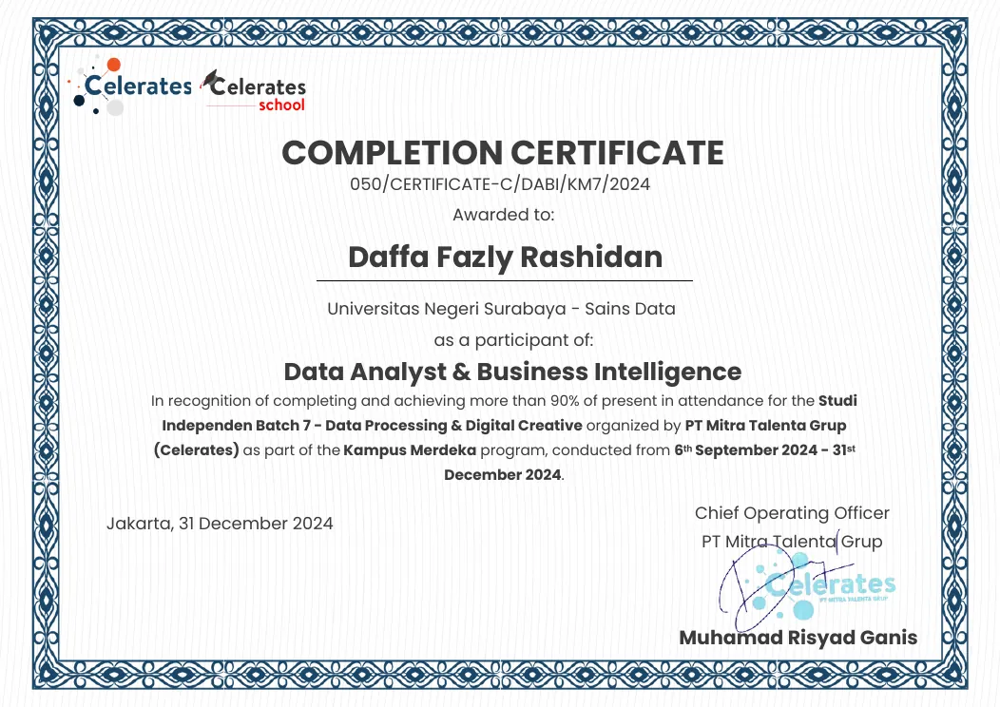
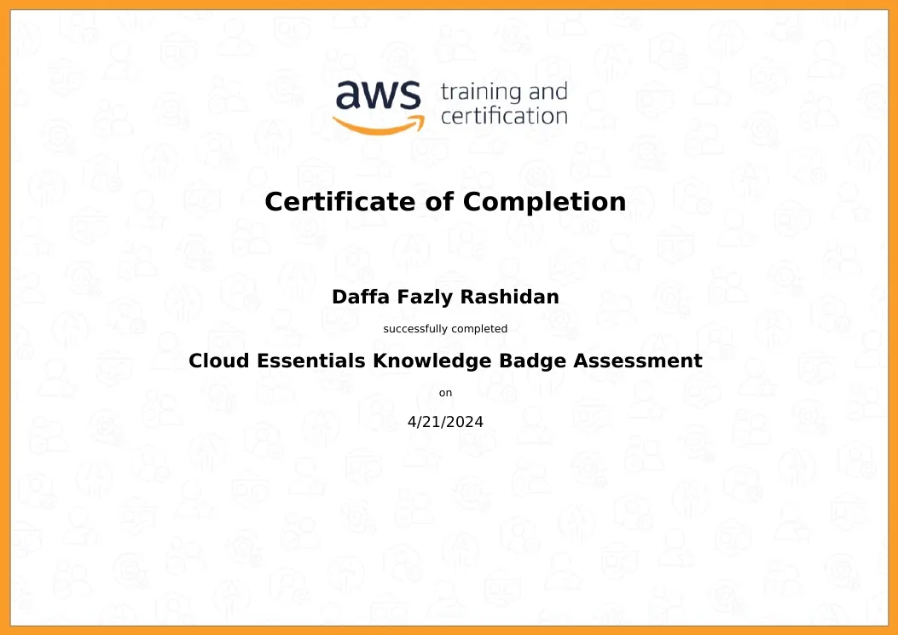
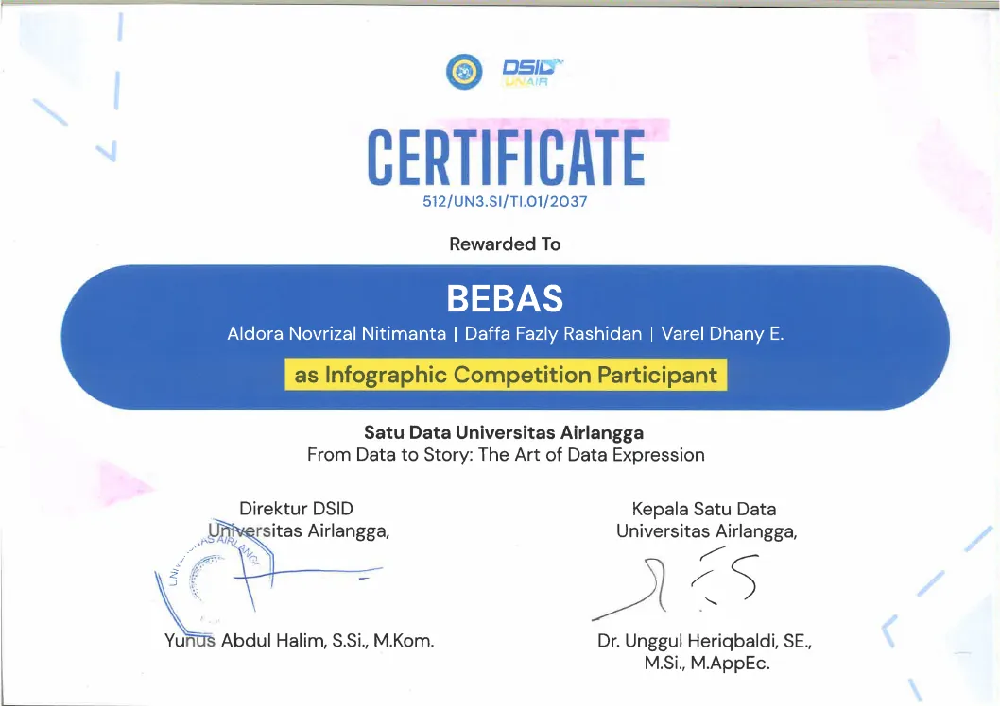

Focused on analytics, machine learning, business intelligence, and information design.
BASEDSURABAYA INDONESIA
Universitas Negeri Surabaya · Data Science background.
NOWOPEN TO OPPORTUNITIES
Data Science · Data Analyst · Machine Learning · Business Intelligence.
01 / PRINCIPLE
I believe good data should move from information to understanding — and finally to action.
MY APPROACH01 / 04
01
UNDERSTAND
Define the problem, context, and data before building a solution.
02
EXPLORE
Find patterns, relationships, and signals hidden within the data.
03
BUILD
Turn insights into models, visualizations, and practical solutions.
04
COMMUNICATE
Make complex findings clear, useful, and easy to act on.
DATA→INSIGHT→DECISION→IMPACT
CORE DISCIPLINES04 / FOCUS
01↗
DATA ANALYTICS
Finding patterns, behavior, and meaning in data.
02↗
MACHINE LEARNING
Building models that transform patterns into predictions.
03↗
BUSINESS INTELLIGENCE
Turning metrics into context for better decisions.
04↗
INFORMATION DESIGN
Making complex information clear and visually meaningful.
I like making complex things easier to understand.
DATA / ANALYTICS / INFORMATION DESIGN
02 — SELECTED WORKMOVE / HOVER / SCROLL
03 — EXPERIENCE2022 — 2026
DATA IS ONLY USEFUL WHEN IT MOVES.
04 — TOOLKITTHE STACK
TOOLSI USE.
05 — CERTIFICATIONSLEARNING / CREDENTIALS / PROOF
CERTIFIED.
A curated archive of credentials supporting the work across data, business intelligence, cloud fundamentals, information design, communication, and professional practice.
01 / DATA & BI2024

DATA ANALYST & BICELERATES / COMPLETION
02 / CLOUD2024

AWS CLOUD ESSENTIALSAWS TRAINING & CERTIFICATION
03 / COMPETITIONUNAIR

INFOGRAPHIC COMPETITIONSATU DATA UNIVERSITAS AIRLANGGA